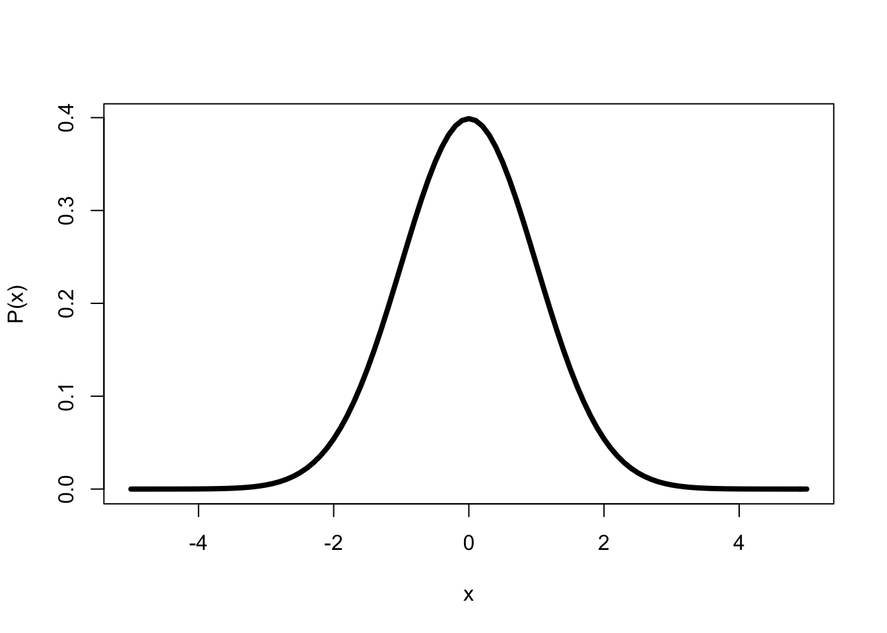

10 Probability distributions
10.1 Probabilities
Calling behind the wheel increases the chance of an accident (Bhargava and Pathania 2013). The average chance of precipitation in the Netherlands is 7%. My order has a 10% chance of being delivered a day later than promised. Chances and probabilities play an important role in our daily lives, and also in academic research. After all, many hypotheses are probabilistic in nature (see Chapter 2): hypotheses make statements about a difference in the chances of outcomes. To be able to draw conclusions with respect to these probabilistic hypotheses, we need to know something about probabilities and probability distributions. This is the subject of the present chapter.
As an introduction, let us take a look at a Dutch Scrabble game. The game contains a bag with 102 tiles inside, each of which has a letter on it 21. Of the 102 tiles, 6 have the letter A on them. If I take one tile from a full and well-mixed bag, what is the chance that I draw the letter A? The probability-of-the-outcome-A is referred to as \(P(\textrm{A})\), with the \(P\) of Probabilitas (Lat. “chance, probability”), and can be determined as \[\begin{equation} P(\textrm{A})= \frac{\textrm{number of A's}}{\textrm{total number of tiles}}= \frac{6}{102} = 0.0588 \tag{10.1} \end{equation}\]
The probability of an event is expressed as a proportion, a number between \(0\) and \(1\), or as a percentage, i.e. a proportion in units of \(1/100\). A probability can never be smaller than \(0\) and can never be larger than 1: after all, the probability is the proportion between the number of specific outcomes (numerator) and the total number of possible outcomes (denominator) (see formula (10.1)), where the numerator can never be larger than the denominator (Schuurman and De Kluiver 2001).
When two outcomes mutually exclude each other, as is the case for the outcomes A or B in our Scrabble example, then we may sum up these outcomes (rule of sum, or addition principle, or OR rule). The probability of outcome A or outcome B (where outcomes A and B exclude each other), is the sum of \(P(\textrm{A})\) and \(P(\textrm{B})\): \[\begin{equation} P(\textrm{A or B}) = P(\textrm{A}) + P(\textrm{B}) \tag{10.2} \end{equation}\]
Example 10.1: In our Scrabble example, \(P(\textrm{A})=\frac{6}{102}\) and \(P(\textrm{B})=\frac{2}{102}\). As such, the probability of outcome A-or-B is \(P(\textrm{A or B})=P(\textrm{A})+P(\textrm{B})=6/102+2/102=8/102=.0784\).
If I take one tile from a full and well-mixed bag, then two complementary outcomes are possible: Either I draw an A, or I do not draw an A. The outcomes again mutually exclude each other so we may sum up the probabilities too. Moreover, the outcomes are complementary, i.e the outcome can only have one of these two possible outcomes. The respective probabilities of these complementary events are also complementary, i.e. these respective probabilities sum up to precisely \(1\) =100% (complement rule). After all, there is a 100% probability that the outcome is one of the two possible outcomes of the draw. If we already know \(P(\textrm{A})\), we can easily calculate the probability of the complementary outcome: \[\begin{align} P(\textrm{A}) + P(\textrm{not-A}) & = & 1\\ P(\textrm{A}) & = & 1 - P(\textrm{not-A})\\ P(\textrm{not-A}) & = & 1 - P(\textrm{A}) \tag{10.3} \end{align}\]
Example 10.2: In our Scrabble example, \(P(\textrm{A})=\frac{6}{102}\). As such, the probability of the not-A outcome is \(P(\textrm{not-A})= 1 - P(\textrm{A}) = 1 - \frac{6}{102} = \frac{96}{102} = .9412\).
As a thought experiment, let us now take a second Scrabble game, and, from it, take
a second tile bag which is equally full and well-mixed.
Without looking, we will now take a letter tile from each bag. There are now two
events or outcomes, namely the outcome of the first draw (from the first
bag), and the outcome of the second draw (from the second bag).
These two outcomes do not mutually exclude each other, since they
have no mutual influence on each other. After all, the second
bag’s outcome is not influenced by the first bag’s outcome, and vice versa. As
such, we say that these outcomes are independent of each other. When the outcomes
are indeed independent of each other, we calculate the probability of a
combination of the outcomes by multiplication (multiplication
principle, or product rule, or AND rule).
The probability of the combination of outcome A and outcome B
(where outcomes A and B are independent of each other), is the
product of \(P(\textrm{A})\) and \(P(\textrm{B})\):
\[\begin{equation}
P(\textrm{A and B}) = P(\textrm{A}) \times P(\textrm{B})
\tag{10.4}
\end{equation}\]
Example 10.3: In our Scrabble example, \(P(\textrm{A})=\frac{6}{102}\) and \(P(\textrm{B})=\frac{2}{102}\). The probability of outcome A with the first bag and B with the second bag is \(P(\textrm{A and B})=P(\textrm{A}) \times P(\textrm{B})=\frac{6}{102} \times \frac{2}{102} = .0012\).
Example 10.4: In our Scrabble game, \(P(\textrm{vowel})=\frac{38}{102}\). The probability of drawing a vowel (A, E, I, O, U, Y) from the first bag and a vowel from the second bag is \(P(\textrm{vowel-and-vowel})=P(\textrm{first vowel}) \times P(\textrm{second vowel})=\frac{38}{102} \times \frac{38}{102} = (\frac{38}{102})^2 = .1388\).
10.2 Binomial probability distribution
For the remainder of this chapter, we will adopt two changes to the Scrabble game. Firstly, we will remove the 2 blank, letter-less titles from the bag. There are now precisely 100 tiles left, of which 38 have a vowel (\(V\)) and 62 have a consonant (\(C\)). Accordingly, there are only two possible outcome categories left and these mutually exclude each other. We call such a variable of the nominal level of measurement, with precisely two categories, binomial (‘two-named’). We regard the vowels as hits, and the consonants as misses. These two possible outcomes are complementary: \(P(V)=.38\) (abbreviated as \(p\)) and \(P(C)=.62\) (abbreviated as \(q=1-p\)).
Secondly, from now on, we will put the drawn letter tile back into the bag, once we have noted down the drawn letter. We also mix the bag again. In this way, we do not require multiple complete letter bags, but only one letter bag which, after each draw with replacement, is once again complete and mixed. We consider the outcomes of consecutive draws to be independent.
An aside: The outcome of a certain draw is thus independent of the outcome of previous draws. If a vowel has just been drawn \(100\times\) in a row, then that has no influence at all on (the outcome of) the next draw from the letter bag. After all, the letter bag, or the hand of the person drawing tiles does not have any memory. At each draw, the probability of a hit is \(p=.38\), even if a vowel has just been drawn \(100\times\) or $1000. The same is the case for consecutive outcomes with roulette: in each round, the probability of a hit is \(1/37\), even if the ball has just landed on the same number \(100\times\)22.
With the aforementioned changes, let us now conduct \(n=3\) draws (with replacement, see above), and for each possible outcome determine the probability of the outcome, see Table 10.1.
| Outcome | Number of vowels | Probabilitiy |
|---|---|---|
| CCC | 0 | \(qqq = q^3\) |
| VCC | 1 | \(pqq = pq^2\) |
| CVC | 1 | \(qpq = pq^2\) |
| CCV | 1 | \(qqp = pq^2\) |
| VVC | 2 | \(ppq = p^2q\) |
| VCV | 2 | \(pqp = p^2q\) |
| CVV | 2 | \(qpp = p^2q\) |
| VVV | 3 | \(ppp = p^3\) |
The number of hits (vowels) in the \(n=3\) draws has the probability distribution summarised in Table 10.2 (first and last column) and Figure 10.1 (horizontal and vertical axes). In such a probability distribution, we can see, for each possible outcome of \(x\) (here: number of vowels), how high the probability of the outcome is.
| Number of vowels | Probability | Probability |
|---|---|---|
| 0 | \(1 q^3\) | = .2383 |
| 1 | \(3 p q^2\) | = .4383 |
| 2 | \(3 p^2 q\) | = .2686 |
| 3 | \(1 p^3\) | = .0549 |
| total | \((p+q)^3\) | = 1.0000 |
Figure 10.1: Probability distribution of a binomial variable with \(n=3\) and \(p=.38\).
We call the probability distribution of a binomial variable the binomial probability distribution, also referred to as the binomial distribution. You can calculate the precise probabilities of the binomial probability distribution with the formula (10.5) below.
10.2.1 formulas
The probability of an \(x\) number of hits in \(n\) draws is given as \[\begin{equation} P(x\,\mbox{hits}) = {n \choose x} p^x (1-p)^{n-x} \tag{10.5} \end{equation}\] in which \(n\) is the number of draws or attempts, \(x\) is the number of hits (between 0 and \(n\)), and \(p\) is the probability of a hit.
The coefficient \({n \choose x}\) indicates the number of different orderings
in which we can choose a combination (syllable) of \(x\) elements from
\(n\). With \(x=1\) vowel from \(n=3\) draws, there are three possibilities:
one vowel might have been drawn in the first draw, or the second
draw, or the third draw, see
Table 10.1. The number of different possible
orderings is indicated as
\[\begin{equation}
{n \choose x} = \frac{n!}{x!(n-x)!}
\tag{10.6}
\end{equation}\]
in which
\(x! = x (x-1) (x-2) \dots \times 2 \times 1\), thus
\(4!=4\times3\times2\times1=24\).
Example 10.5: There are 4 chairs for 2 persons. A maximum of 1 person is allowed to sit down on one chair. How many different orderings of \(x=2\) persons are possible over \(n=4\) chairs?
Answer: There are \({4 \choose 2} = \frac{4\times3\times2\times1}{2\times1\times2\times1} = \frac{24}{4} = 6\) possible orderings, namely 1100, 1010, 1001, 0110, 0101, and 0011.
These binomial coefficients indicating the number of different possible orderings can quickly be retrieved from Pascal’s so-called triangle, depicted in Table 10.3. We can find the number of different orderings of \(x=2\) persons over \(n=4\) chairs in row \(n=4\). The uppermost row is that for \(n=0\). The fifth row is that for \(n=4\) and we can see the binomial coefficients for \(x= 0, 1, 2, 3, 4\) there one after another. For \({4 \choose 2}\), we find there the binomial coefficient \(6\). Every coefficient is the total of the two coefficients above23, and every coefficient can be understood as the number of possible routes descending from the top of the triangle to the cell.
| \(n= 0\): | 1 | ||||||||||||||
| \(n= 1\): | 1 | 1 | |||||||||||||
| \(n= 2\): | 1 | 2 | 1 | ||||||||||||
| \(n= 3\): | 1 | 3 | 3 | 1 | |||||||||||
| \(n= 4\): | 1 | 4 | 6 | 4 | 1 | ||||||||||
| \(n= 5\): | 1 | 5 | 10 | 10 | 5 | 1 | |||||||||
| \(n= 6\): | 1 | 6 | 15 | 20 | 15 | 6 | 1 | ||||||||
| \(n= 7\): | 1 | 7 | 21 | 35 | 35 | 21 | 7 | 1 |
The mean and the standard deviation of the binomial probability distribution are \[\begin{aligned} \mu & = & np \\ \sigma & = & \sqrt{ np(1-p) }\end{aligned}\]
Example 10.6: The binomial probability distribution for \(x\) hits from \(n=3\) draws with \(p=.38\) probability of a hit is shown in Figure 10.1. This binomial probabilitydistribution has an average \(\mu=n \times p = 3 \times .38 = 1.14\), and a standard deviation \(\sigma = \sqrt{n \times p \times (1-p)} = \sqrt{ 3 \times .38 \times .62} = 0.84\).
10.2.2 JASP
The binomial probability distribution such as shown in Figure 10.1 may be obtained in JASP by selecting the following option in the top menu bar:
Distributions > Discrete: BinomialIf the Distributions option is not shown in the top bar, then you can add the option by clicking on the blue +-button in the top right corner, and checking option Distributions.
In the “Binomial” input, there is an input panel Show Distribution. In that panel, enter the appropriate values for \(p\) (under “free parameter”) and for \(n\) (under “fixed parameter”). In the “Display” input, check option Probability mass function.
The output panel now shows the binomial Probability Mass Plot.
10.2.3 R
## [1] 0.238328 0.438216 0.268584 0.054872The output is shown in Table 10.2 below.
## [,1] [,2] [,3] [,4] [,5] [,6] [,7] [,8] [,9] [,10]
## [1,] 1 0 0 0 0 0 0 0 0 0
## [2,] 1 1 0 0 0 0 0 0 0 0
## [3,] 1 2 1 0 0 0 0 0 0 0
## [4,] 1 3 3 1 0 0 0 0 0 0
## [5,] 1 4 6 4 1 0 0 0 0 0
## [6,] 1 5 10 10 5 1 0 0 0 0
## [7,] 1 6 15 20 15 6 1 0 0 0
## [8,] 1 7 21 35 35 21 7 1 0 0
## [9,] 1 8 28 56 70 56 28 8 1 0
## [10,] 1 9 36 84 126 126 84 36 9 1Pascal’s triangle can be found on the left under the diagonal of this matrix.
10.3 Normal probability distribution
The more the sample size \(n\) increases, the less gradually the binomial probability distribution will move up, and the more fluid the probability distribution will become, as is shown in Figure 10.2.
Figure 10.2: Probability distribution of a binomial variable x with n=50 (left) and n=500 (right) and p=.38.
With an even larger sample, the probability distribution becomes a fluid line. This probability distribution occurs so often, that it is called the normal probability distribution or ‘normal distribution’. The distribution is also referred to as the Gaussian distribution (named after the mathematician Carl Friedrich Gauss, 1777–1855), or the ‘bell curve’ (after the shape). Many variables approximately follow this probability distribution: birth weight, body length, vocabulary size, IQ, contents of a 1 litre ℮ carton of milk, length of a telephone conversation, etc. etc. For all of these variables, observations close to the average have a high probability of occurring, and observations which deviate greatly from the average are relatively rare (low probability).
Figure 10.3: Normal probability distribution of a variable x with average 0 and standard deviation 1.
The normal probability distribution of a variable \(X\) with average \(\mu\) and standard deviation \(\sigma\) has the following characteristics (see Figure 10.3):
the distribution is symmetrical around the average \(\mu\),
the distribution is asymptotic, i.e. the tails go on infinitely,
the average, the median and the mode coincide,
the total area under the curve, i.e. the total probability of one of the possible outcomes, is equal to 1,
the area under the curve indicates the probability of a value of \(X\) within a certain interval,
the inflection points of the curve (from concave to convex and vice versa) are at \(X=\mu-\sigma\) and \(X=\mu+\sigma\),
around 2/3’s of the observations are between \(X=\mu-\sigma\) and \(X=\mu+\sigma\) (dark grey area; \(P(-1<x/\sigma<1)=.6827\) or 68%) and around 95% of the observations are between \(-2\sigma\) and \(+2\sigma\) (dark grey plus light grey areas; \(P(-2<x/\sigma<2)=.9546\)), this is known as the Empirical Rule.
A normal probability distribution with \(\mu=0\) and \(\sigma=1\) is referred to as the standard normal probability distribution. Just as we saw earlier (§9.8), we can standardise a normally distributed variable \(x\), i.e. transform the observations to a standard score or \(z\)-score: \(z = (x-\overline{x})/s\). The probability distribution in Figure 10.3 is that of the standard normal probability distribution of \(Z\), or the probability distribution of \((X-\mu)/\sigma\).
You could calculate the probability distribution of a normally distributed variable \(X\) yourself with the help of the formula (10.8) below. However, it is more convenient to use a table for it; this can be found in Appendix B. Explained in graphical form, the tables provide you, for different areas or probabilities \(p\) on the right-hand side under the curve, the positive value of \(Z^*\) which constitutes the left-hand limit of the area. This means that you have precisely probability \(p\) of finding a value \(Z\) which is as large as or larger than this lower limit \(Z^*\) (provided of course that the variable is indeed normally distributed).
Example 10.7: On the right-hand side of Figure 10.3, we can see a small white area under the curve. This area renders the probability that \(Z>2\). The area has a size of 0.0228. The probability of finding a value of \(Z>2\) is thus 0.0228 or a little less than 2.5%. (Tip: relate this probability to the aforementioned Empirical Rule).
In Appendix B, you can find for convenience not one but two tables, each consisting of several column designations and and a row of cells. The first table provides you, for different ‘rounded’ probabilities \(p\) (columns), the critical values \(Z^*\) (cells), for which the probability \(p\) of finding a value of \(Z\) which is as large as or larger than the critical value \(Z^*\), is precisely equal to the value \(p\) at the top of the column. The second table works the same, but in the case the ‘rounded’ values of \(Z^*\) are in the cells, and precise probabilities \(p\) are in the column designations.
What is the probability \(p\) that \(Z>1\)? In the second subtable, second column, we find \(p=0.1587\). Based on this, we also know that \(P(Z<1)\) must be \(1-0.1587=0.8413\). Moreover, we know that the distribution is symmetric (see above), so we know that \(P(Z< -1)\) must also be \(.1587\). What is the probability \(p\) that \(Z>3\)? In the second subtable, we find for boundary value \(Z^*=3\) the p-value \(p=0.0013\). Thus, for a normally distributed variable \(Z\) there is a p-value \(p=0.0013\) (often reported as \(p=.001\)) of finding a value of \(Z\) which is at least three standard deviations above the average.
We often want to know the opposite: when we choose a certain p-value, what should the boundary value \(Z^*\) be? Which boundary value of \(Z^*\) distinguishes the highest 5% of observations from the lowest 95% (\(p=0.05\))? In the first subtable, we find for p-value \(p=0.05\) the boundary value \(Z^*=1.645\). This boundary value, calculated back to the original variable, is often referred to as the 95th percentile or ‘P95’ of the distribution. Whoever has achieved at least this score, is part of the top 5% and has thus performed better than 95% of the participants (provided again that the variable is indeed normally distributed).
Example 10.8: By definition, extreme values occur infrequently with a normally distributed variable. But what is the limit for an extreme value. Let us assume that we want to consider no more than 5% of all observations as extreme. The normal probability distribution is symmetric, thus from this 5% we can expect that one half (2.5%) is at the left extremity of the distribution, and the other 2.5% is on the right-hand side. Which boundary value \(Z^*\) corresponds with this p-value \(p=0.025\)?
In Appendix B, we take the first subtable. In the column for p-value \(p=0.025\), we find boundary value \(Z^*=1.960\). If we find an observation with \(Z \ge 1.960\) or with \(Z \le -1.960\), then we consider that to be an extreme, rare observation.
Example 10.9: Intelligence is expressed as an IQ score, a variable with a normal probability distribution with \(\mu=100\) and \(\sigma=15\). “Membership of Mensa is open to persons who have achieved a score within the upper two percent of the general population on an approved intelligence test that has been properly administered and supervised” (www.mensa.org). What is the minimum IQ score you must achieve to become a member?
Answer: The 98th percentile from a standard normally distributed variable is at \(Z^*=+2.0537\), and thus with \(x=\overline{x}+2.0537 s = 100+30.8 = 130.8\). Rounded upwards, you thus have to achieve an IQ score of 131 points or higher.
Example 10.10: Verify the aforementioned Empirical Rule with the help of Appendix B.
10.3.1 formulas
If variable \(X\) has a normal probability distribution, with average \(\mu\) and standard deviation \(\sigma\), then this is shown as \[\begin{equation} X \sim \mathcal{N}(\mu,\sigma) \tag{10.7} \end{equation}\]
The normal probability distribution of variable \(X\) with average \(\mu\) and standard deviation \(\sigma\) is \[\begin{equation} P(X) = \frac{1}{\sigma \sqrt{2\pi}} \mbox{e}^{ \frac{-(X-\mu)^2}{2\sigma^2} }. \tag{10.8} \end{equation}\]
The standard normal probability distribution of variable \(Z\) with average \(\mu=0\) and standard deviation \(\sigma=1\) is \[\begin{equation} P(Z) = \frac{1}{\sqrt{2\pi}} \mbox{e}^{ \frac{-Z^2}{2} } \tag{10.9} \end{equation}\]
10.3.2 JASP
The normal probability distribution such as shown in Figure 10.3 may be obtained in JASP by selecting the following option in the top menu bar:
Distributions > Continuous: NormalIf the Distributions option is not shown in the top bar, then you can add the option by clicking on the blue +-button in the top right corner, and checking option Distributions.
In the “Normal” input panel, there is an input panel Show Distribution. In that panel, the values of the standard normal distribution are entered by default, and option Probability density function is checked by default. The standard normal distribution is shown in the output under Density Plot.
For other normal density distributions, the values of \(\mu\) and \(\sigma\) may be adjusted, and you may specify the domain shown (under “Options”, then “range of x”).
Note that, under the heading “Parameters”, you should select the option labeled “\(\mu\), \(\sigma\)” if you enter the mean and standard deviation (the default option is “\(\mu\), \(\sigma^2\)” using variance; for the standard normal distribution \(\sigma=\sigma^2=1\)).
10.3.3 R
The normal probability distribution in Figure 10.3 may be plotted in R using the command below. A curve is plotted, with x in the specified domain, and y being the function which computes the normal probability density using equation (10.8):
curve( dnorm( x, mean=0, sd=1 ), # function specifying y values, normal density
from=-5, to=+5, # domain of x
lwd=4, # line width is 4x default value
xlab="x", ylab="P(x)" # labels along x and y axes
)
If used with the additional argument curve( ..., add=TRUE ), then the curve will be added to the most recent plot (see e.g. Figure 10.6 below).
10.4 Does my variable have a normal probability distribution?
The longest song in my digital music library lasts around 50 minutes (it’s a piece of classical Indian music, a ‘morning raga’). A histogram of all music number lengths is shown in Figure 10.4.

Figure 10.4: Histogram of the lengths of music numbers in my digital music library.
This histogram shows that these lengths clearly do not follow a normal probability distribution: the distribution is not symmetric, and the lowest tail does not go on infinitely (there are no music numbers with negative lengths).
The average \(\bar{x} =\) 4.698 and standard deviation \(s =\) 5.11 also point to a non-normal probability distribution: with a normal distribution, we expect that only \((68/2)+50=84\)% of the lengths last longer than \(\bar{x}-s\approx 0\) minutes, but in reality 100% last longer than 0 minutes (thus a larger proportion than expected).
A frequently used technique to inspect whether or not a variable \(X\) has a normal probability distribution, is to make a graph with the observed values along one of the axes (here the horizontal axis), and the corresponding \(z\)-scores along the other axis. A figure like this is called a quantile-quantile plot or Q-Q plot; the Q-Q plot for the lengths in my music library are shown in Figure 10.5.

Figure 10.5: Quantile-quantile plot of the lengths of music numbers in my digital library.
If the lengths had a normal probability distribution (were normally distributed), then the points would cluster around the purple straight line. And there would have to be a number of negative lengths… The deviations from the purple straight line in Figure 10.5 thus indicate that the observed lengths do not follow a normal probability distribution, as we already saw in the histogram (Figure 10.4).
There are also different statistical tests to investigate whether or not a variable
has a normal probability distribution. The two most used are the
Shapiro-Wilk test (with test statistic \(W\))
for normality, and the Kolmogorov–Smirnov test (with test statistic \(D\)) for
normality. Both tests investigate the
H0:\(X\sim\mathcal{N}(\bar{X},s)\) (see
formula (10.7)).
10.4.1 SPSS
Analyze > Descriptive Statistics > Explore...Select the variable Time (drag to the Dependent List panel).
Choose the button Plots, and tick Normality plots with tests, which
means ‘if you make a QQ-plot or Normality plot, you should also then conduct
tests on normality’.
Confirm with Continue and afterwards with OK. The output contains
firstly the results of the Shapiro-Wilks test and the
Kolmogorov-Smirnov test. According to both tests, the probability of finding
this distribution, if H0 is true, is almost null – see however the
warning in
§@ref(#sec:plargerthannull)! We thus reject H0 and conclude that
the lengths of music numbers are not normally distributed. After these
test results, there is, amongst others, a Q-Q plot.
10.4.2 R
itunes <- read.table( file="data/itunestimes20120511.txt", header=TRUE )
# Size in bytes, Time in ms
qqnorm(itunes$Time/60000, datax=T, plot.it=FALSE) # normally we'd use plot.it=TRUE
# qqline(itunes$Time/60000, datax=T, col="purple", lwd=T) # see QQ-plot above##
## Shapiro-Wilk normality test
##
## data: itunes$Time/60000
## W = 0.50711, p-value < 2.2e-16According to this test, the probability of finding a distribution, if H0 is zero, is almost null, namely smaller than \(2.2 \times 10^{-16}\) (i.e. smaller than the smallest number that the analysis packet can render). We therefore reject H0 and conclude that the length of music numbers is not normally distributed.
10.5 What if my variable is not normally distributed?
In Part III, we will discuss various statistical tests. The tests which we discuss in Chapters 13 and 14 and 15 however require that the independent variable has a normal probability distribution. If a variable does not have a (approximately) normal probability distribution, then the variable cannot simply be used for statistical testing with the statistical tests there, or to be more precise, the conclusions from such a statistical testing are not valid then. What can be done? There are then two possibilities.
Firstly, it is possible to transform the dependent variable \(y\), i.e. to apply an arithmetic operation to it. If all is well, that results in a variable \(y'\) which is actually normally distributed. Much used transformations are: to take the logarithm (\(y'=\log{y}\)), take the square root, or invert (\(y'=1/y\)). Then, the transformed dependent variable \(y'\) is used for the statistical testing. Of course, it is imperative to check whether the new dependent variable \(y'\) is indeed (approximately) normally distributed. When interpreting the results of the analysis, you should also take into account the transformation performed!
Secondly, it is sometimes possible to use another statistical test which does not require that the dependent variable is normally distributed. Those are called nonparametric tests. We will look at these in more detail in the chapters 16 and 17. A disadvantage of those tests is nevertheless that they have less statistical power (for a discussion of power, see Chapter 14): they are less sensitive, and thus require larger samples to establish an effect.
10.6 Probability distribution of average
In this section, we consider the music numbers in my digital music library as a population. We now take a random sample of \(n=\) 50 numbers, and determine the average length of these 50 music numbers in the sample: let us say \(\bar{x} =\) 4.401 minutes. Surprisingly enough, the average of this sample is close to the average of the population (\(\mu =\) 4.615, see above). We repeat this operation \(250\times\): in this way, we get 250 sample averages. The frequency distribution of these 250 sample averages are shown in Figure 10.6.

Figure 10.6: Frequency distribution of 250 averages, each over a random sample of \(n=50\) music numbers (the dependent variable is the length of a music number, in minutes). The matching normal distribution is shown as a fluid curve.
Surprisingly enough, these averages from (the dependent variables \(X\) in) the samples do show a more or less normal probability distribution, regardless of whether the variable \(X\) in the population is normally distributed or not. Put otherwise, the probability distribution of a sample average always approximates the normal probability distribution, regardless of the probability distribution of the variable in question in the population, provided that the sample was sufficiently large. (This is known as the Central Limit Theorem). Reread the above sentences again carefully. As a rule of thumb, the size of the sample, \(n\), should be at least 30. The larger the sample is, the less the probability distribution of the sample averages deviates from the normal distribution.
The normal probability distribution of the sample averages has its own average, \(\mu_{\bar{X}}\), and its own standard deviation, \(s_{\bar{X}}\). For this, the following applies: \[\begin{equation} \mu_{\bar{X}} = \mu_X \tag{10.10} \end{equation}\] and \[\begin{equation} s_{\bar{X}} = \frac{s}{\sqrt{n}} \tag{10.11} \end{equation}\] The standard deviation of the mean, \(s_{\bar{X}}\), is also known as the ‘standard error of the mean’. The same averages \(\bar{X}\) have less dispersion than the separate observations \(X\), and the averages also vary less when taken over a larger sample, as seems to be the case from formula (10.11). You can consider this standard error of the mean as the ‘margin of error’ in the estimation of the population average out of the sample average.
What is special now is that we do not have to draw and analyse 250 repeated random samples. After all, we know that the sample averages have a normal probability distribution with \(\mu_{\bar{X}} = \mu_X\) and \(s_{\bar{X}} = \frac{s}{\sqrt{n}}\). We can derive the probability distribution of the mean from only one sample of \(n\) observations, with a sample mean \(\bar{X}\) and one standard deviation (Cumming 2012). Reread this paragraph carefully.
10.7 Confidence interval of the mean
As explained above, we can use the mean of the sample, \(\bar{X}\), as a good estimate of the unknown mean in the population, \(\mu\). On the basis of the Central Limit Theorem (§10.6), we also know that the means of repeated samples (of \(n\) observations) follow a normal distribution: \(\mu_{\bar{X}} \sim \mathcal{N}(\mu_{X},\sigma/\sqrt{n})\), and thus that 95% of these repeated sample means will lie between \(\mu_{X}-1.96\sigma/\sqrt{n}\) and \(\mu_{X}+1.96\sigma/\sqrt{n}\). This interval is called the 95% confidence interval. We know with 95% confidence that the population mean \(\mu\) lies in this interval — provided that \(n\) is sufficiently large, and provided that the standard deviation, \(\sigma\), is known in the population.
In practice, this last condition is rarely or never satisfied. The standard deviation in the population is usually not known and this \(\sigma\) is thus also estimated from the sample. We use the sample of \(n\) observations not only to estimate \(\mu_X\) but also to estimate \(\sigma_X\). We can then no longer determine the confidence interval on the basis of the standard normal probability distribution. Instead, we use an adapted version of it, the so-called t-distribution (Figure 10.7). This probability distribution of \(t\) is somewhat broader, i.e. with a somewhat lower peak and with somewhat thicker tails than the standard normal probability distribution of \(Z\) in Figure 10.3. The thought behind this is that the estimation of \(\mu\) is a bit more uncertain (thus the probability distribution is wider) since not only \(\mu\) but also the standard error of the mean (\(s/\sqrt{n}\)) are estimated on the basis of the sample. In both estimations, there can be deviations which mean that there is somewhat more probability of finding a mean which deviates from the population mean. As we have already seen, the larger \(n\) is, the better the estimation of \(\mu\): the t-distribution then approximates the standard normal probability distribution.
Figure 10.7: Probability distribution according to the t-distribution of a variable \(x\) with mean 0 and standard deviation 1, for n=600 and n=6.
For the t-distribution, we thus have to know how large the sample was; after all, this \(n\) determines the precise probability distribution of \(t\), and with it the critical value \(t*\). We will go into more detail on that in §13.2.1. Here, a detailed example will suffice.
Example 10.11: Sometimes a researcher wants to know the speed or tempo with which Dutch is actually spoken, and how much variation in this speech rate or tempo there is between speakers. This variable, speech rate, is expressed as the number of seconds a syllable lasts (typically about \(0.2\) second or \(200\) milliseconds). Although Quené (2008) estimates that \(\mu=0.220\) s and \(\sigma=0.0225\) s, we act as if we do not know these population parameters — just like real researchers who usually do not know the population parameters.
For a sample of \(n=30\) speakers, we find \(\overline{x}=0.215\) and \(s=0.0203\) seconds. From this, we estimate 24 \(\hat{\mu}=0.215\) and \(\hat{\sigma}=0.0203\). Since \(\sigma\) is not known, we use the t-distribution to determine the confidence interval. We use the t-distribution for \(n=30\) and find a critical value \(t^*=2.05\) (see Appendix C, for \(B=95\)%). According to formula (10.12), we know with 95% confidence that the unknown population mean \(\mu\) lies between \(\overline{x}-2.05\times s_{\bar{x}}\) and \(\overline{x}+2.05\times s_{\bar{x}}\), or between \(0.215-2.05\times0.0037\) and \(0.215+2.05\times0.0037\), or between \(0.208\) and \(0.223\) seconds. If the true value in the population is within these limits, then the observed sample value has a probability of 95% of occurring (Spiegelhalter 2019, 241).
In Figure 10.8, you can see the results of a computer simulation to illustrate this. We have taken \(100\times\) imaginary samples of \(n=30\) native speakers of Standard Dutch, and established the speech tempo of these speakers. For each sample, we have drawn the 95% confidence interval. For 95 of the 100 samples, the population mean \(\mu=0.220\) indeed falls within the interval. But for 5 out of 100 samples, from a population with \(\mu=0.220\), the sample’s confidence interval does not contain the population mean (these are marked along the right hand side).

Figure 10.8: 95% confidence intervals and sample means, over 100 simulated samples (n=30) out of a population with mean 0.220 and s.d. 0.0225; see text.
10.7.1 formulas
The two-sided \(B\)% confidence interval for the population average is \[\begin{equation} \bar{X} \pm t^*_{n-1} \times \frac{s}{\sqrt{n}} \tag{10.12} \end{equation}\] in which \(t^*\) with \(n-1\) degrees of freedom is found with the help of Appendix C, see §13.2.1 for more explanation about this.
References
However, two of the tiles are blank (without any letter); later in this section we will remove these blank tiles from the bag.↩︎
Roulette players can gamble on 36 of the 37 possible outcomes, so in the long term the casino receives a \(1/37\) share of all bets.↩︎
Thus, \({n \choose x} = {n-1 \choose x} + {n-1 \choose x-1}\) (Weisstein 2015).↩︎
Estimations of parameters are indicated with a “circumflex” or “hat” above them.↩︎